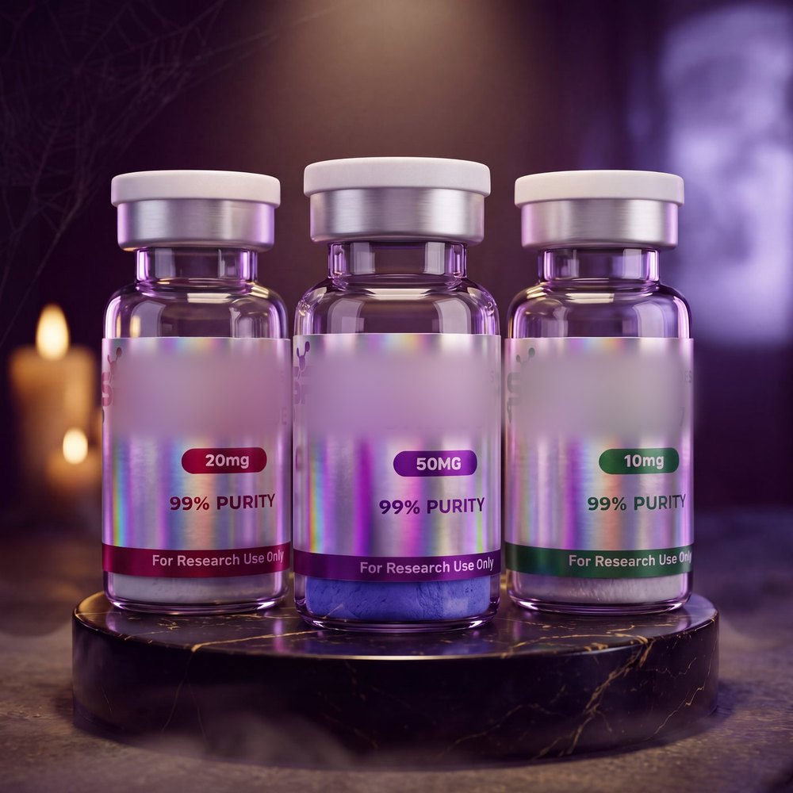

↗Pour ouvrir Telegram : appuie sur ⋯ en haut à droitepuis « Ouvrir dans le navigateur »
Stacy Peptides
👇 La boutique 👇

Édition HalloweenOuvrir la boutiquePacks, flacons à l'unité · sur Telegram
›
Rejoindre le canalNouveautés, restocks et codes promo en premiert.me/StacyLabEu
›
👇 Support 👇
Une question ?On te répond directementt.me/StacyPep
›
👇 Pourquoi nous 👇
📦 Livraison avec suivi
⭐ Programme fidélité
🏷️ Prix bas
💸 Packs moins chers
⚡ Réponse rapide